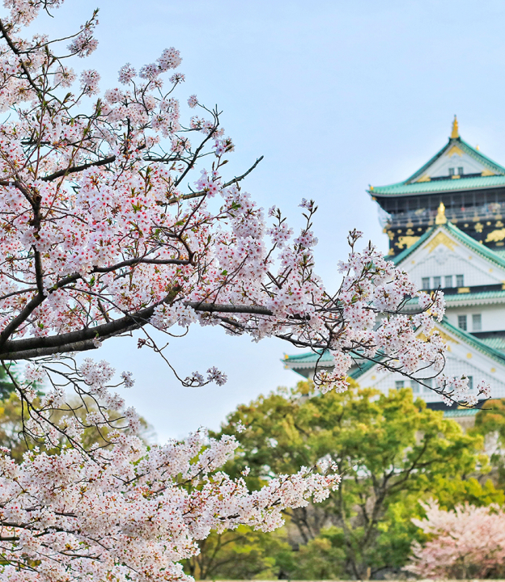

Histórias de viagens de nossos clientes. Inspire-se, encontre
roteiros e dicas! Qual seu próximo destino?
Destinos da Excursão
Chegada
Nossa viagem começou no Aeroporto Internacional de Narita,
localizado a cerca de 60 km de Tóquio. Após desembarcar e fazer
todos os procedimentos de imigração, fomos recebidos pela equipe
da Jornada Viagens, que nos conduziu até o nosso hotel.
Acomodação
Nos hospedamos no luxuoso Hotel Okura Tokyo, localizado no bairro
de Toranomon. O hotel possui uma vista incrível para a cidade, e
oferece uma ampla gama de serviços, incluindo um spa, uma piscina,
restaurantes renomados e um lounge bar. Ficamos encantados com a
atenção aos detalhes e a qualidade do atendimento.
Explorando a cidade
Começamos nosso tour pela cidade com uma visita ao famoso Templo
Sensoji, um dos mais antigos e importantes templos budistas do
Japão. Caminhamos pela rua comercial Nakamise, onde encontramos
muitas lojas vendendo artigos típicos japoneses, como quimonos,
leques e comidas tradicionais. Em seguida, visitamos o
icônico cruzamento de Shibuya, um dos mais movimentados do mundo,
onde observamos a sincronia dos pedestres atravessando a rua.
No dia seguinte, visitamos o Parque Ueno, que abriga o Museu
Nacional de Tóquio, onde pudemos conhecer a história e cultura
japonesa. À noite, fomos a um típico Izakaya, um bar japonês que
serve uma grande variedade de pratos e bebidas.
Compras
Tóquio é famosa por suas lojas de departamento e centros
comerciais, e não podíamos deixar de visitar algumas delas. Fomos
ao famoso distrito comercial de Ginza, onde encontramos lojas das
marcas mais renomadas do mundo. Também visitamos o distrito
de Akihabara, conhecido como o centro de eletrônicos e
entretenimento de Tóquio, onde encontramos diversas lojas de
jogos, eletrônicos e mangás.
Gastronomia
Não se pode falar do Japão sem mencionar sua gastronomia. Tivemos
a oportunidade de experimentar uma grande variedade de pratos
típicos, como sushi, sashimi, ramen e tempura, além de doces
tradicionais como o mochi.
Concluindo...
Nossa viagem a Tóquio com a agência Jornada Viagens foi uma
experiência inesquecível. A equipe da agência cuidou de todos os
detalhes, desde a reserva do hotel até a escolha dos melhores
lugares para visitar e comer. Recomendamos a Jornada Viagens para
todos que desejam fazer uma viagem incrível ao Japão.
Talvez você também goste destes posts...

Osaka
Osaka é uma cidade agitada e moderna no Japãos. A cidade é famosa
por sua gastronomia deliciosa e por ser um excelente ponto de
partida para explorar outras cidades japonesas próximas.
Cidade localizada no sudoeste do Japão, conhecida mundialmente por
ter sido o alvo do primeiro bombardeio atômico da históri. Hoje, a
cidade é um símbolo de paz e reconciliação. Além disso, Hiroshima
também é conhecida por sua gastronomia.
Kyoto é uma cidade localizada no centro do Japão, conhecida por
ser a antiga capital do país e preservar muitas tradições
culturais japonesas. Com seus templos históricos, jardins
tradicionais e cerimônias de chá, é um mergulho na cultura
japonesa.